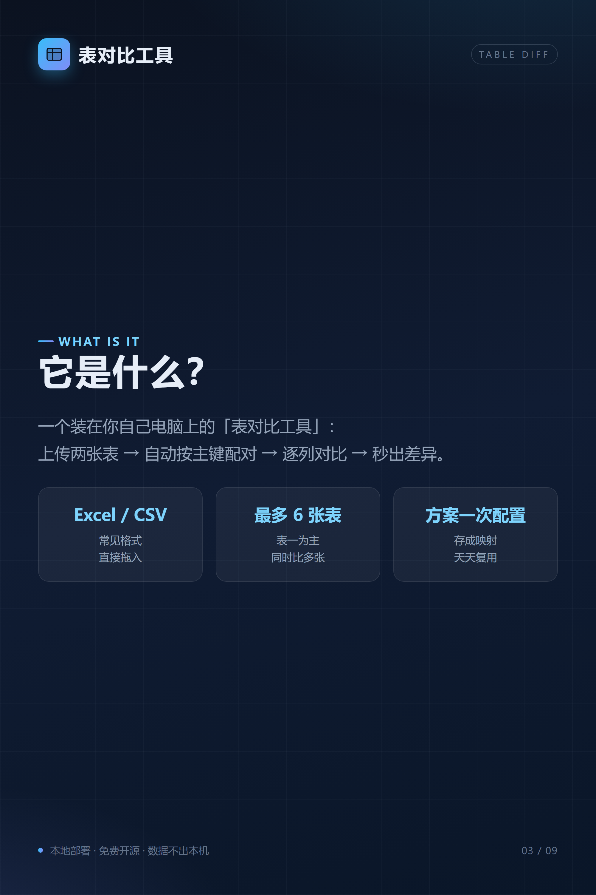
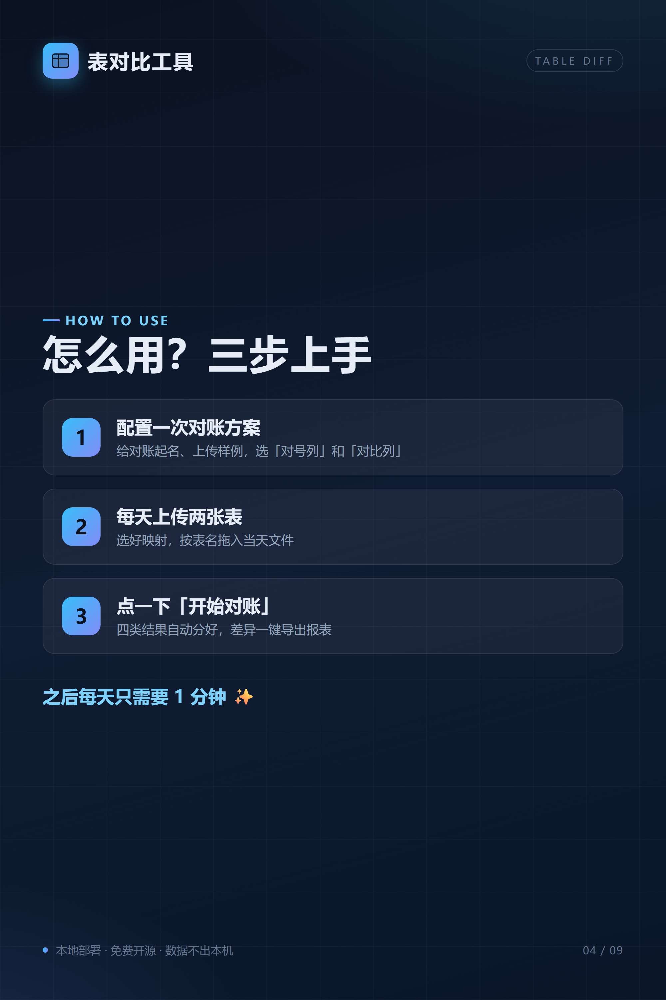
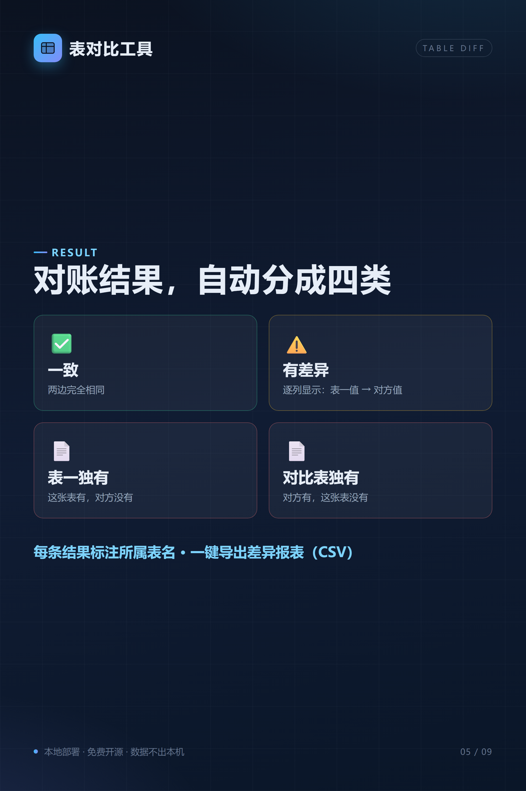
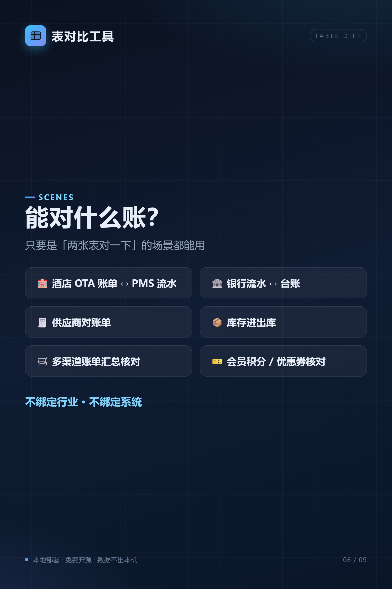
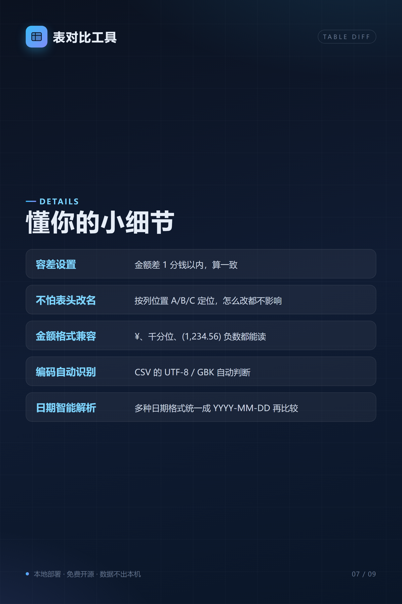

已生成 9 张 1000×1500 深色卡片配图（2x 截图，共 2000×3000，适合发朋友圈），并附两版可直接发布的推广文案。
天天对账对到眼花？推荐一个我刚整理好的「表对比工具」： ✅ Excel / CSV 直接拖入 ✅ 一次配置「对号列 + 对比列」，之后天天复用 ✅ 一致 / 有差异 / 表一独有 / 对比表独有，自动分四类 ✅ 数据不出本机，免费开源 酒店 OTA 账单、银行流水、供应商对账、库存核对……只要是「两张表对一下」都能用。 GitHub 搜索 table-diff，exe 双击即用。欢迎体验/吐槽 🙌 #表对比工具 #对账神器 #效率工具 #开源项目 #数据安全
之前帮朋友处理 OTA 账单对 PMS，几千行 Excel 对到怀疑人生。一气之下写了个本地小工具——表对比工具。 它做的事情很简单： 你给它两张表，它自动按「订单号」这类主键配对，把金额、日期、数量等列逐一对上。最后只给你四类结果：✅ 一致、⚠️ 有差异、📄 表一独有、📄 对比表独有。 每天的工作从「拼 VLOOKUP」变成： 拖文件 → 点「开始对账」 → 导出差异报表。 顺手整理了 9 张图，把核心功能和场景一次性讲清楚。数据完全本地存储，不上云，MIT 开源。 GitHub 搜索 table-diff，exe 免安装版直接下载。如果你身边也有天天和表格死磕的人，欢迎转发给他 😎 #表对比工具 #对账工具 #Excel #开源 #本地部署 #效率神器





💡 发布建议：9 张图可以全部上传朋友圈，形成「左滑浏览」的系列卡片；也可以只挑 3-6 张（如 01/02/05/08/09）配合长版文案使用。